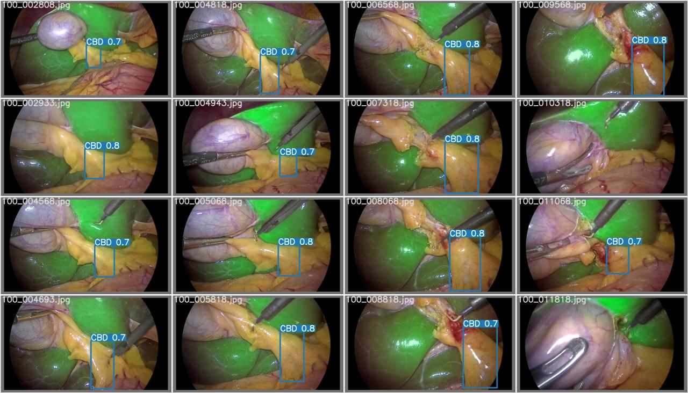
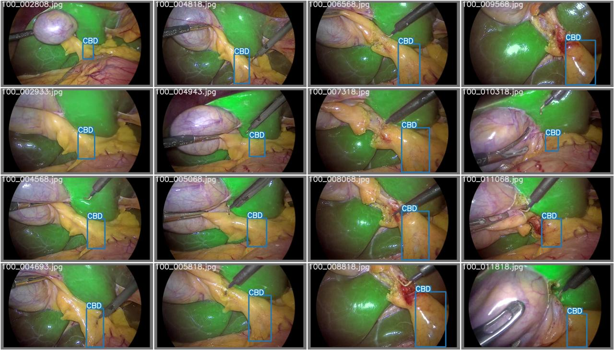
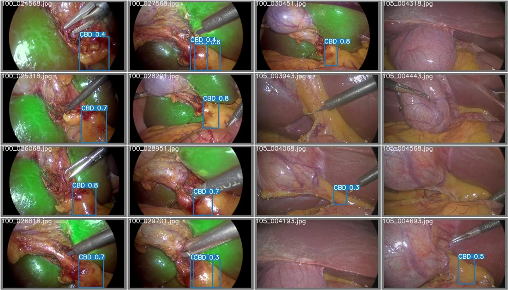
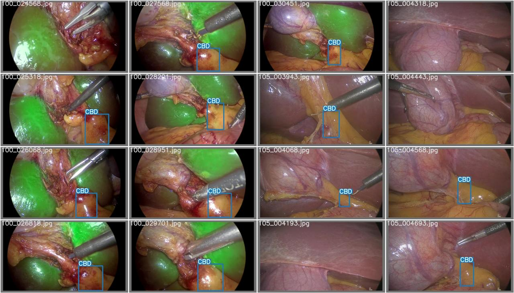
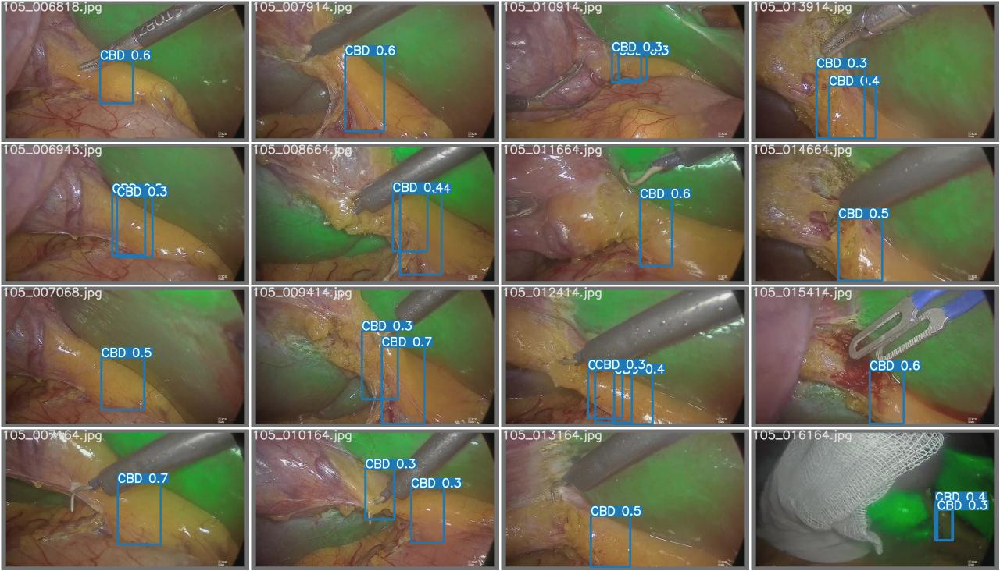
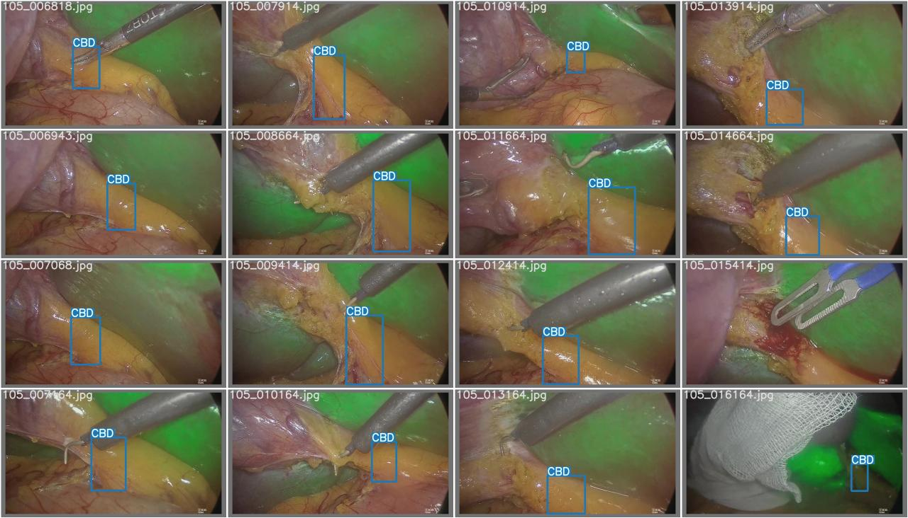
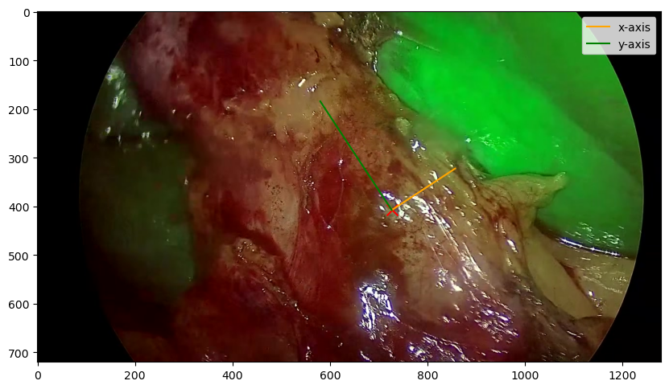
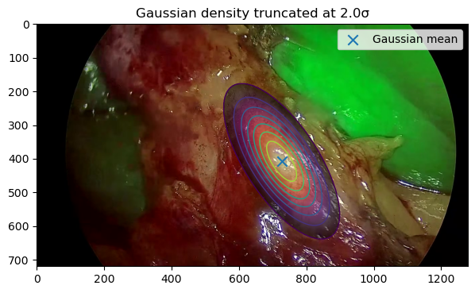

| YOLOv11 | P | R | map@0.5 | map@0.5..0.95 |
|---|---|---|---|---|
| All | 66.0 | 56.6 | 61.5 | 27.1 |
| Hard | 87.3 | 79.2 | 86.1 | 41.0 |
| Soft | 50.8 | 46.0 | 44.3 | 16.8 |
| YOLOv7 | P | R | map@0.5 | map@0.5..0.95 |
|---|---|---|---|---|
| All | 74.6 | 61.4 | 67.3 | 30.3 |
| Hard | 91.2 | 88.1 | 91.3 | 45.8 |
| Soft | 56.2 | 54.4 | 48.9 | 17.6 |
| Ours | P | R | map@0.5 | map@0.5..0.95 |
|---|---|---|---|---|
| All | 69.0 | 29.9 | ||
| Hard | 90.7 | 42.4 | ||
| Soft | 53.7 | 21.1 |






Where is the CBD likely to be given the two masks?
Does the image support the presence of the CBD at location $c$ given the two masks?

